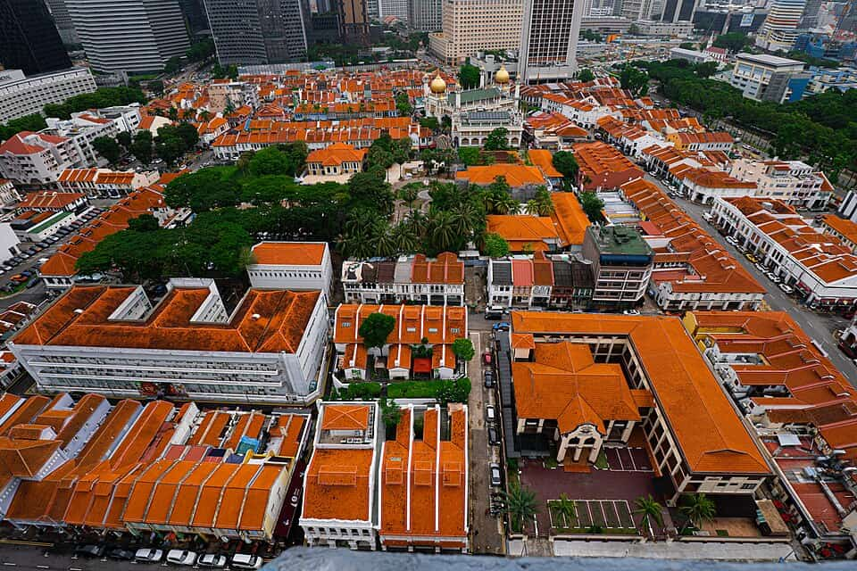

Singapore
Kampong Glam
a town of Singapore — sights & hawker food, sourced
3 places · 1 area · every one sourced, pinned and status-checked · last checked . Ordered by tier, then by number of named sources. How we choose
Sultan Mosque
Start with Hjh Maimunah Restaurant

Start with

Kampong Glam 3 places · area 1 of 1
-
1 Must see within Kampong Glam · Malay
Hjh Maimunah Restaurant
The benchmark nasi padang near Kampong Glam; long-time Michelin Bib Gourmand.
11 & 15 Jalan Pisang, Kampong Glam
Recommended by , ,
-
2 Must see within Kampong Glam
Sultan Mosque (Masjid Sultan)
Kampong Glam's golden-domed royal mosque; a National Monument and the heart of the Malay-Arab quarter.
Look for Mosque
3 Muscat Street, Kampong Glam
Recommended by ,
-
3 Worth the detour within Kampong Glam · Hawker
Zam Zam Restaurant
Founded 1908 opposite Sultan Mosque; the most famous Indian-Muslim murtabak specialist.
697-699 North Bridge Road, Kampong Glam
Recommended by ,
How we choose
Every place is recommended by named sources (review-aggregator star ratings never count as the recommender), pinned to its door from a published coordinate, and status-checked. Closed places stay, flagged, so you know they’re gone.
- Must see
- The places to plan a visit around — graded within each area, not across the city.
- Worth the detour
- Strong picks, worth going out of your way for.
- Deep cut
- For the curious: smaller, odder, more local.
Within each area, places are ordered by tier, then by number of named sources — never by popularity. Numbers on the cards match the pins on the map. No ratings, prices or opening hours are shown, because the guide doesn’t hold verified ones.
1 sights and 2 places to eat in Kampong Glam, a town of Singapore, each traceable to the source that named it (Michelin, local news & vetted local/viral creators). Renders in soft pastel, light or dark.